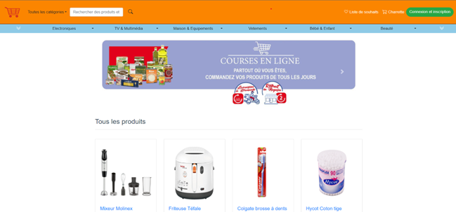

E-commerce Web Platform

Designed and developed a full-stack e-commerce web application focused on
security, performance, and modular architecture using
Express.js, TypeScript, and Vue.js.
üîê Security & Authentication
- Built a secure RESTful API with JWT authentication and role-based authorization (Admin, Provider, User).
- Implemented bcrypt hashing for password protection and encryption for sensitive data (e.g., phone numbers).
- Applied Joi validation to enforce data integrity and prevent malformed inputs.
⚙️ Backend Architecture
- Structured backend with modular components: Users, Products, Orders, Reviews, Coupons.
- Clean service layer for business logic following MVC principles.
- Optimized performance with caching mechanisms and efficient MySQL queries.
üíª Frontend Development
- Developed a responsive Vue.js frontend using Bootstrap and Tailwind CSS.
- Integrated real-time order tracking, product ratings, and image uploads.
üìä Data Analytics with Power BI
- Admins: Access KPIs, user statistics, and system health dashboards.
- Providers: Monitor tasks, earnings, and customer reviews.
- Users: Track progress, order history, and feedback.
This project gave me end-to-end experience in building secure, scalable
applications and delivering data-driven insights tailored for each user role.
üîó View on GitHub
⬅ Back to Projects